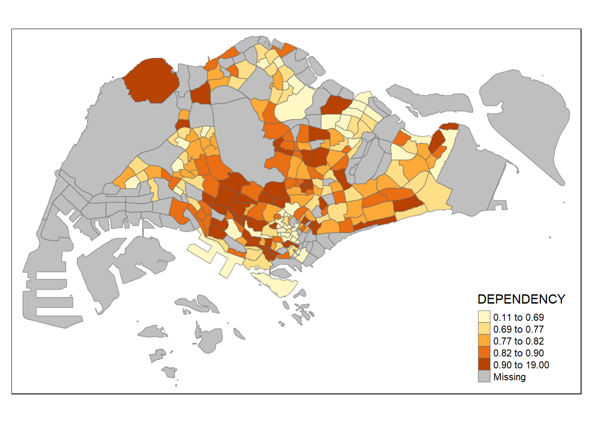
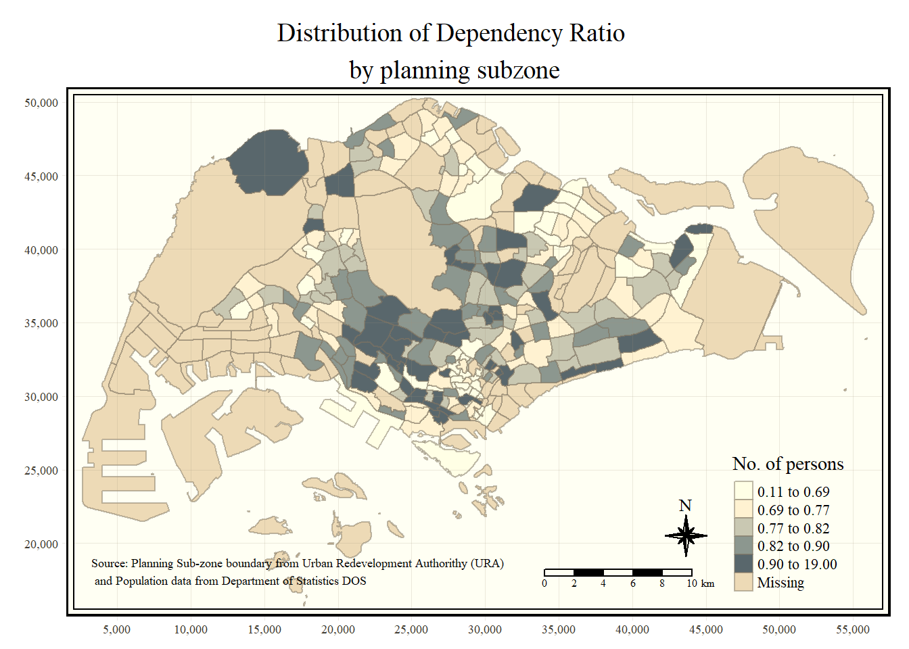

pacman::p_load(sf, tmap, tidyverse)Hands-on Exercise 2: Thematic Mapping and GeoVisualisation with R
Overview
This hands on exercise will teach how to plot functional and truthful choropleth maps using an R package called tmap package.
Getting Started
There are a total of 5 packages to be used in this exercise:
tmap to plot choropleth maps
readr for importing
tidyr for tidying data
dplyr for wrangling data
sf for handling geospatial data
Three of which are part of the tidyverse package.
To load these packages:
Importing Data into R
The Data
Master Plan 2014 Subzone Boundary (Web)
in ESRI shapefile format
from data.gov.sg
consist of the geographical boundary of Singapore at the planning subzone level
Singapore Residents by Planning Area / Subzone, Age Group, Sex and Type of Dwelling, June 2011-2020
aspatial data file
from the Department of Statistics, Singapore
PA and SZ fields can be used as unique identifiers to geocode to MP14_SUBZONE_WEB_PL shapefile
Importing Geospatial Data into R
st_read() from sf package -> to import MP14_SUBZONE_WEB_PL shapefile into R as a simple feature data frame called mpsz
mpsz <- st_read(dsn = "data/geospatial",
layer = "MP14_SUBZONE_WEB_PL")Reading layer `MP14_SUBZONE_WEB_PL' from data source
`C:\emilyaurelia\IS415-GAA\Hands-on_Ex\Hands-on_Ex02\data\geospatial'
using driver `ESRI Shapefile'
Simple feature collection with 323 features and 15 fields
Geometry type: MULTIPOLYGON
Dimension: XY
Bounding box: xmin: 2667.538 ymin: 15748.72 xmax: 56396.44 ymax: 50256.33
Projected CRS: SVY21To examine the content of mpsz:
mpszSimple feature collection with 323 features and 15 fields
Geometry type: MULTIPOLYGON
Dimension: XY
Bounding box: xmin: 2667.538 ymin: 15748.72 xmax: 56396.44 ymax: 50256.33
Projected CRS: SVY21
First 10 features:
OBJECTID SUBZONE_NO SUBZONE_N SUBZONE_C CA_IND PLN_AREA_N
1 1 1 MARINA SOUTH MSSZ01 Y MARINA SOUTH
2 2 1 PEARL'S HILL OTSZ01 Y OUTRAM
3 3 3 BOAT QUAY SRSZ03 Y SINGAPORE RIVER
4 4 8 HENDERSON HILL BMSZ08 N BUKIT MERAH
5 5 3 REDHILL BMSZ03 N BUKIT MERAH
6 6 7 ALEXANDRA HILL BMSZ07 N BUKIT MERAH
7 7 9 BUKIT HO SWEE BMSZ09 N BUKIT MERAH
8 8 2 CLARKE QUAY SRSZ02 Y SINGAPORE RIVER
9 9 13 PASIR PANJANG 1 QTSZ13 N QUEENSTOWN
10 10 7 QUEENSWAY QTSZ07 N QUEENSTOWN
PLN_AREA_C REGION_N REGION_C INC_CRC FMEL_UPD_D X_ADDR
1 MS CENTRAL REGION CR 5ED7EB253F99252E 2014-12-05 31595.84
2 OT CENTRAL REGION CR 8C7149B9EB32EEFC 2014-12-05 28679.06
3 SR CENTRAL REGION CR C35FEFF02B13E0E5 2014-12-05 29654.96
4 BM CENTRAL REGION CR 3775D82C5DDBEFBD 2014-12-05 26782.83
5 BM CENTRAL REGION CR 85D9ABEF0A40678F 2014-12-05 26201.96
6 BM CENTRAL REGION CR 9D286521EF5E3B59 2014-12-05 25358.82
7 BM CENTRAL REGION CR 7839A8577144EFE2 2014-12-05 27680.06
8 SR CENTRAL REGION CR 48661DC0FBA09F7A 2014-12-05 29253.21
9 QT CENTRAL REGION CR 1F721290C421BFAB 2014-12-05 22077.34
10 QT CENTRAL REGION CR 3580D2AFFBEE914C 2014-12-05 24168.31
Y_ADDR SHAPE_Leng SHAPE_Area geometry
1 29220.19 5267.381 1630379.3 MULTIPOLYGON (((31495.56 30...
2 29782.05 3506.107 559816.2 MULTIPOLYGON (((29092.28 30...
3 29974.66 1740.926 160807.5 MULTIPOLYGON (((29932.33 29...
4 29933.77 3313.625 595428.9 MULTIPOLYGON (((27131.28 30...
5 30005.70 2825.594 387429.4 MULTIPOLYGON (((26451.03 30...
6 29991.38 4428.913 1030378.8 MULTIPOLYGON (((25899.7 297...
7 30230.86 3275.312 551732.0 MULTIPOLYGON (((27746.95 30...
8 30222.86 2208.619 290184.7 MULTIPOLYGON (((29351.26 29...
9 29893.78 6571.323 1084792.3 MULTIPOLYGON (((20996.49 30...
10 30104.18 3454.239 631644.3 MULTIPOLYGON (((24472.11 29...Only the first 10 records are shown
Importing Attribute Data into R
read_csv() from readr package to import and read respopagsextod2011to2020.csv into RStudio
assign the file into an R dataframe called popdata
popdata <- read_csv("data/aspatial/respopagesextod2011to2020.csv")Data Preparation
Prepare a data table with year 2020 values before a thematic map can be prepared. The data should include these variables:
- YOUNG: age group 0 to 4 until age group 20 t0 24,
- ECONOMY ACTIVE: age group 25 to 29 until age group 60 to 64
- AGED: age group 65 and above
- TOTAL: all age group
- DEPENDENCY: the ratio between young and aged against economy active group
- Data Wrangling
Functions used: - pivot_wider() of tidyr package - mutate(), filter(), group_by() and select() of dplyr package
popdata2020 <- popdata %>%
filter(Time == 2020) %>%
group_by(PA, SZ, AG) %>%
summarise(`POP` = sum(`Pop`)) %>%
ungroup()%>%
pivot_wider(names_from=AG,
values_from=POP) %>%
mutate(YOUNG = rowSums(.[3:6])
+rowSums(.[12])) %>%
mutate(`ECONOMY ACTIVE` = rowSums(.[7:11])+
rowSums(.[13:15]))%>%
mutate(`AGED`=rowSums(.[16:21])) %>%
mutate(`TOTAL`=rowSums(.[3:21])) %>%
mutate(`DEPENDENCY` = (`YOUNG` + `AGED`)
/`ECONOMY ACTIVE`) %>%
select(`PA`, `SZ`, `YOUNG`,
`ECONOMY ACTIVE`, `AGED`,
`TOTAL`, `DEPENDENCY`)popdata# A tibble: 984,656 × 7
PA SZ AG Sex TOD Pop Time
<chr> <chr> <chr> <chr> <chr> <dbl> <dbl>
1 Ang Mo Kio Ang Mo Kio Town Centre 0_to_4 Males HDB 1- and 2-Ro… 0 2011
2 Ang Mo Kio Ang Mo Kio Town Centre 0_to_4 Males HDB 3-Room Flats 10 2011
3 Ang Mo Kio Ang Mo Kio Town Centre 0_to_4 Males HDB 4-Room Flats 30 2011
4 Ang Mo Kio Ang Mo Kio Town Centre 0_to_4 Males HDB 5-Room and … 50 2011
5 Ang Mo Kio Ang Mo Kio Town Centre 0_to_4 Males HUDC Flats (exc… 0 2011
6 Ang Mo Kio Ang Mo Kio Town Centre 0_to_4 Males Landed Properti… 0 2011
7 Ang Mo Kio Ang Mo Kio Town Centre 0_to_4 Males Condominiums an… 40 2011
8 Ang Mo Kio Ang Mo Kio Town Centre 0_to_4 Males Others 0 2011
9 Ang Mo Kio Ang Mo Kio Town Centre 0_to_4 Females HDB 1- and 2-Ro… 0 2011
10 Ang Mo Kio Ang Mo Kio Town Centre 0_to_4 Females HDB 3-Room Flats 10 2011
# ℹ 984,646 more rows- Joining the attribute data and geospatial data
We need to make sure that the content of the data of PA and SZ with PLN_AREA_N and SUBZONE_N are the same since we want to combine the data in popdata2020 and mpsz together
change the value of PA and SZ to uppercase to make it the same with PLN_AREA_N and SUBZONE_N:
popdata2020 <- popdata2020 %>%
mutate_at(.vars = vars(PA, SZ),
.funs = list(toupper)) %>%
filter(`ECONOMY ACTIVE` > 0)left_join() of dplyr to join the geographical data and attribute table using planning subzone name (SUBZONE_N and SZ) as the common identifier
mpsz_pop2020 <- left_join(mpsz, popdata2020,
by = c("SUBZONE_N" = "SZ"))The output of the code above will have the same data format as the left dataframe, in this case is mpsz
write_rds(mpsz_pop2020, "data/rds/mpszpop2020.rds")Choropleth Mapping Geospatial Data Using tmap
Choropleth map is used to show data that is based on spatial areas such as countries, provinces, states, counties or census units.
There are two approaches that can be used to prepare thematic map using tmap: - Plotting a thematic map quickly by using qtm() - Plotting highly customisable thematic map by using tmap elements
Plotting a choropleth map quickly by using qtm()
qtm() provides a good default visualization in many cases
a cartographic standard choropleth map:
tmap_mode("plot")
qtm(mpsz_pop2020,
fill = "DEPENDENCY")
Learning Note: - tmap_mode() with “plot” option -> to produce a static map
- for interactive mode, use "view" option
- fill argument is used to map the attribute (i.e DEPENDENCY)Creating a choropleth map by using tmap’s elements
Disadvantage of qtm(): - makes aesthetic of individual layers harder to control.
tmap’s drawing elements should be used to make a high quality cartographic choropleth map:
tm_shape(mpsz_pop2020)+
tm_fill("DEPENDENCY",
style = "quantile",
palette = "Blues",
title = "Dependency ratio") +
tm_layout(main.title = "Distribution of Dependency Ratio by planning subzone",
main.title.position = "center",
main.title.size = 1.2,
legend.height = 0.45,
legend.width = 0.35,
frame = TRUE) +
tm_borders(alpha = 0.5) +
tm_compass(type="8star", size = 2) +
tm_scale_bar() +
tm_grid(alpha =0.2) +
tm_credits("Source: Planning Sub-zone boundary from Urban Redevelopment Authorithy (URA)\n and Population data from Department of Statistics DOS",
position = c("left", "bottom"))
- Drawing a base map
Basic building block of tmap: - tm_shape(): to define the input data - (one or more) tm_fill(): - (one or more) tm_polygons(): draw the planning subzone polygons
Base map:
tm_shape(mpsz_pop2020) +
tm_polygons()
- Drawing a choropleth map using tm_polygons()
assign the target variable such as Dependency to tm_polygons() -> to draw a choropleth map showing the geographical distribution os a selected variable by planning subzone
tm_shape(mpsz_pop2020)+
tm_polygons("DEPENDENCY")
Learning Notes: - Default interval binning used to draw the choropleth map: “pretty - Default colour scheme used: YlOrRd of ColorBrewer - By default, missing values will be shaded in grey
- Drawing a choropleth map using tm_fill() and tm_border()
tm_fill(): shades the polygons by using the default colour scheme tm_borders(): adds the borders of the shapefile onto the choropleth map
tm_shape(mpsz_pop2020)+
tm_fill("DEPENDENCY")
add boundary of the planning subzones:
tm_shape(mpsz_pop2020)+
tm_fill("DEPENDENCY") +
tm_borders(lwd = 0.1, alpha = 1)
Arguments for tm_borders(): - alpha: transparency between 0 (totally transparent) and 1 (not transparent); by default, the alpha value of the col is used - col: border colour - lwd: border line width, default is 1 - lty: border line type, default is “solid”
Data Classification methods of tmap
Ten data classification methods of tmap: fixed, sd, equal, pretty (default), quantile, kmeans, hclust, bclust, fisher, and jenks
style argument of tm_fill() or tm_polygons() is used to define a data classification method
- Plotting choropleth maps with built-in classification methods
a jenks data classification using 5 classes:
tm_shape(mpsz_pop2020)+
tm_fill("DEPENDENCY",
n = 5,
style = "jenks") +
tm_borders(alpha = 0.5)
an equal data classification method using 5 classes:
tm_shape(mpsz_pop2020)+
tm_fill("DEPENDENCY",
n = 5,
style = "equal") +
tm_borders(alpha = 0.5)
DIY:
a sd data classification method using 5 classes:
tm_shape(mpsz_pop2020)+
tm_fill("DEPENDENCY",
n = 5,
style = "sd") +
tm_borders(alpha = 0.5)
a quantile data classification method using 5 classes:
tm_shape(mpsz_pop2020)+
tm_fill("DEPENDENCY",
n = 5,
style = "quantile") +
tm_borders(alpha = 0.5)
a kmeans data classification method using 5 classes:
tm_shape(mpsz_pop2020)+
tm_fill("DEPENDENCY",
n = 5,
style = "kmeans") +
tm_borders(alpha = 0.5)
a hclust data classification method using 5 classes:
tm_shape(mpsz_pop2020)+
tm_fill("DEPENDENCY",
n = 5,
style = "hclust") +
tm_borders(alpha = 0.5)
a bclust data classification method using 5 classes:
tm_shape(mpsz_pop2020)+
tm_fill("DEPENDENCY",
n = 5,
style = "bclust") +
tm_borders(alpha = 0.5)Committee Member: 1(1) 2(1) 3(1) 4(1) 5(1) 6(1) 7(1) 8(1) 9(1) 10(1)
Computing Hierarchical Clusteringa fisher data classification method using 5 classes:
tm_shape(mpsz_pop2020)+
tm_fill("DEPENDENCY",
n = 5,
style = "fisher") +
tm_borders(alpha = 0.5)
a pretty data classification method using 5 classes:
tm_shape(mpsz_pop2020)+
tm_fill("DEPENDENCY",
n = 5,
style = "pretty") +
tm_borders(alpha = 0.5)
DIY:
a quantile data classification method using 2 classes:
tm_shape(mpsz_pop2020)+
tm_fill("DEPENDENCY",
n = 2,
style = "quantile") +
tm_borders(alpha = 0.5)
a quantile data classification method using 6 classes:
tm_shape(mpsz_pop2020)+
tm_fill("DEPENDENCY",
n = 6,
style = "quantile") +
tm_borders(alpha = 0.5)a quantile data classification method using 10 classes:
tm_shape(mpsz_pop2020)+
tm_fill("DEPENDENCY",
n = 10,
style = "quantile") +
tm_borders(alpha = 0.5)
a quantile data classification method using 20 classes:
tm_shape(mpsz_pop2020)+
tm_fill("DEPENDENCY",
n = 20,
style = "quantile") +
tm_borders(alpha = 0.5)
The more the quantile or the classes, the more the color separation and the easier it is to classify which region has higher and lower dependency ratio
- Plotting choropleth map with custom break
breaks argument to customize the breakpoints –> to have n categories, n+1 elements must be specified in the breaks option (ascending order)
show descriptive statistics of DEPENDENCY field:
summary(mpsz_pop2020$DEPENDENCY) Min. 1st Qu. Median Mean 3rd Qu. Max. NA's
0.1111 0.7147 0.7866 0.8585 0.8763 19.0000 92 From the statistic above, looking at the 1st and 3rd quartile, we can set the break points at 0.60, 0.70, 0.80, and 0.90. We also need to include a minimum of 0 and a maximum of 1.00. Thus, our breaks vector is c(0, 0.60, 0.70, 0.80, 0.90, 1.00)
tm_shape(mpsz_pop2020)+
tm_fill("DEPENDENCY",
breaks = c(0, 0.60, 0.70, 0.80, 0.90, 1.00)) +
tm_borders(alpha = 0.5)
Colour Scheme
Using ColourBrewer palette
palette argument of tm_fill() to assign the preferred colour:
tm_shape(mpsz_pop2020)+
tm_fill("DEPENDENCY",
n = 6,
style = "quantile",
palette = "Blues") +
tm_borders(alpha = 0.5)
we can use the “-” prefix to reverse the colour shading:
tm_shape(mpsz_pop2020)+
tm_fill("DEPENDENCY",
style = "quantile",
palette = "-Blues") +
tm_borders(alpha = 0.5)Map Layouts
Refers to the combination of all map elements into a cohesive map.
Map Legend
you can modify the placement, format and appearance of the legend:
tm_shape(mpsz_pop2020)+
tm_fill("DEPENDENCY",
style = "jenks",
palette = "Blues",
legend.hist = TRUE,
legend.is.portrait = TRUE,
legend.hist.z = 0.1) +
tm_layout(main.title = "Distribution of Dependency Ratio by planning subzone \n(Jenks classification)",
main.title.position = "center",
main.title.size = 1,
legend.height = 0.45,
legend.width = 0.35,
legend.outside = FALSE,
legend.position = c("right", "bottom"),
frame = FALSE) +
tm_borders(alpha = 0.5)
Map Style
tmap_style() to change the layout settings of the map:
tm_shape(mpsz_pop2020)+
tm_fill("DEPENDENCY",
style = "quantile",
palette = "-Greens") +
tm_borders(alpha = 0.5) +
tmap_style("classic")
Cartographic Furniture
to draw other map furniture such as compass, scale bar and grid lines
tm_compass(): to show compass tm_scale_bar(): to show scale bar tm_grid(): to show grid lines for the map
tm_shape(mpsz_pop2020)+
tm_fill("DEPENDENCY",
style = "quantile",
palette = "Blues",
title = "No. of persons") +
tm_layout(main.title = "Distribution of Dependency Ratio \nby planning subzone",
main.title.position = "center",
main.title.size = 1.2,
legend.height = 0.45,
legend.width = 0.35,
frame = TRUE) +
tm_borders(alpha = 0.5) +
tm_compass(type="8star", size = 2) +
tm_scale_bar(width = 0.15) +
tm_grid(lwd = 0.1, alpha = 0.2) +
tm_credits("Source: Planning Sub-zone boundary from Urban Redevelopment Authorithy (URA)\n and Population data from Department of Statistics DOS",
position = c("left", "bottom"))
to reset the style:
tmap_style("white")Drawing Small Multiple Choropleth Maps
Small multiple maps (facet maps): many maps, arranged side by side, sometimes stacked vertically
Can be plotted in three ways: - assigning multiple values to at least one of the aesthetic arguments - defining a group-by variable in tm_facets - creating multiple stand-alone maps with tmap_arrange()
By assigning multiple values to at least one of the aesthetic arguments
defining ncols in tm_fill():
tm_shape(mpsz_pop2020)+
tm_fill(c("YOUNG", "AGED"),
style = "equal",
palette = "Blues") +
tm_layout(legend.position = c("right", "bottom")) +
tm_borders(alpha = 0.5) +
tmap_style("white")
assigning multiple values to at least one of the aesthetic arguments:
tm_shape(mpsz_pop2020)+
tm_polygons(c("DEPENDENCY","AGED"),
style = c("equal", "quantile"),
palette = list("Blues","Greens")) +
tm_layout(legend.position = c("right", "bottom"))
By defining a group-by variable in tm_facets()
multiple small choropleth maps:
tm_shape(mpsz_pop2020) +
tm_fill("DEPENDENCY",
style = "quantile",
palette = "Blues",
thres.poly = 0) +
tm_facets(by="REGION_N",
free.coords=TRUE,
drop.shapes=TRUE) +
tm_layout(legend.show = FALSE,
title.position = c("center", "center"),
title.size = 20) +
tm_borders(alpha = 0.5)
By creating multiple stand-alone maps with tmap_arrange()
creating multiple stand-alone maps with tmap_arrange():
youngmap <- tm_shape(mpsz_pop2020)+
tm_polygons("YOUNG",
style = "quantile",
palette = "Blues")
agedmap <- tm_shape(mpsz_pop2020)+
tm_polygons("AGED",
style = "quantile",
palette = "Blues")
tmap_arrange(youngmap, agedmap, asp=1, ncol=2)
Mapping Spatial Object Meeting a Selection Criterion
use selection function to map spatial objects meeting the selection criterion:
tm_shape(mpsz_pop2020[mpsz_pop2020$REGION_N=="CENTRAL REGION", ])+
tm_fill("DEPENDENCY",
style = "quantile",
palette = "Blues",
legend.hist = TRUE,
legend.is.portrait = TRUE,
legend.hist.z = 0.1) +
tm_layout(legend.outside = TRUE,
legend.height = 0.45,
legend.width = 5.0,
legend.position = c("right", "bottom"),
frame = FALSE) +
tm_borders(alpha = 0.5)